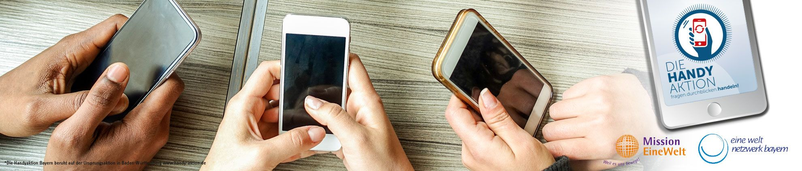

Aktuelles
Handysammelaktion – Schatzkiste Handy

Jedes Jahr werden in Deutschland mehr als 35 Millionen neue Handys gekauft. Im
Durchschnitt wird jedes Gerät nur 18 Monate genutzt und dann durch ein neues
ersetzt. In Deutschlands Schubladen liegen ca. 104 Millionen ungenutzte Handys.
Alte Handys sind wahre Schatzkisten und wir wollen das Wiederverwerten der
darin enthaltenen wertvollen Rohstoffe unterstützen.
Um diese Rohstoffe wird vielerorts hart gekämpft, mit Erlösen auch Bürgerkriege
finanziert. Unter der Gewalt leidet besonders die Zivilgesellschaft. Der Abbau von
Gold, Silber, Kupfer, Kobalt, Coltan und Palladium, geht in vielen Ländern auf Kosten
von Mensch und Umwelt. Die Arbeit in den Minen mit zum Teil primitiven Hilfsmitteln
ist gefährlich, der Lohn gering und Kinderarbeit keine Seltenheit.
Unterstützen Sie uns, bringen Sie Ihre nicht mehr genutzten Handys in den
Weltladen. Bitte, soweit möglich, alle Daten löschen und Speicher- und Chipkarte entfernen.
Koordiniert wird diese Sammelaktion von der Mission Eine Welt, dem Eine Welt
Netzwerk Bayern und der Telekom. Mit einem Teil des Erlöses werden Projekte in
Bayern, El Salvador und Liberia unterstützt.
Deshalb: Machen Sie mit! / Mach mit!
Weitere Informationen unter www.handyaktion-bayern.de